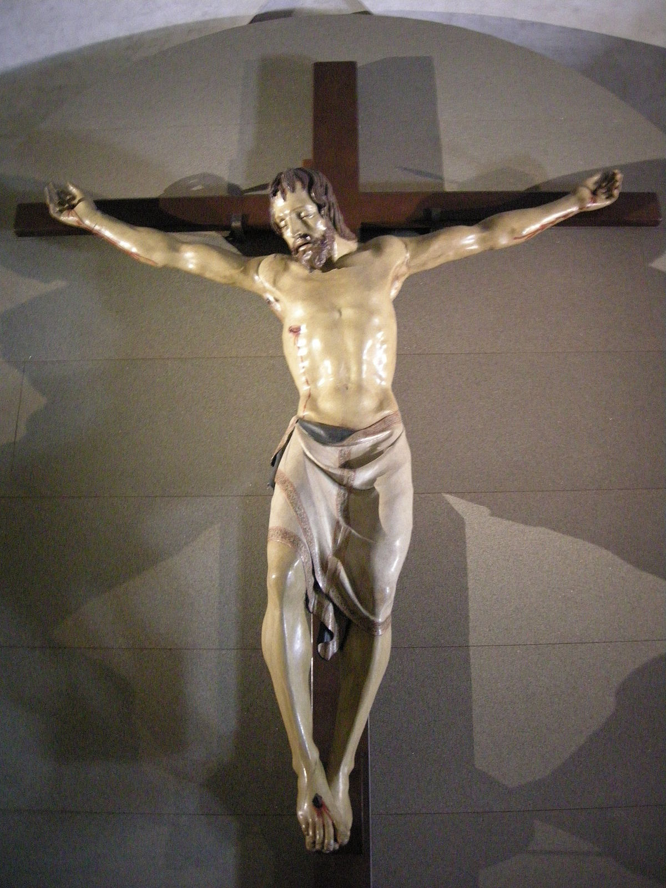
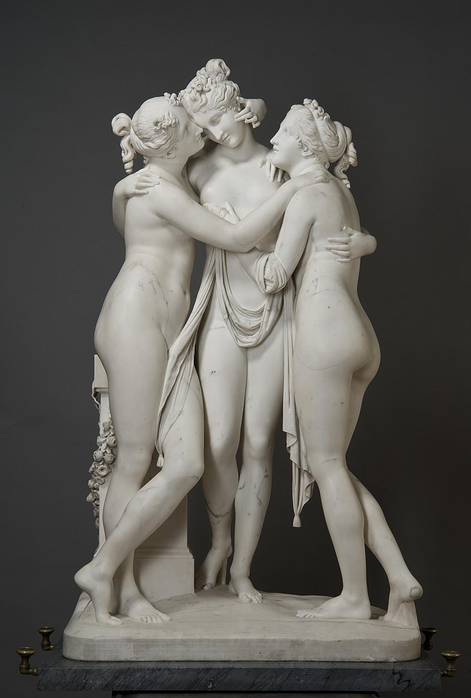

Szobrászat (görög eredetű szóval: plasztika) a képzőművészet egyik legismertebb, hagyományos ága. Termékei, a szobrok szilárd anyagokból formált teljes, háromdimenziós térbeli kiterjedésű („körüljárható”) műalkotások.
Híres szobrászok
-Donatello : A 15. század legjelentősebb szobrásza, bár sok különböző művészeti irányban képviseltette magát.
Elsősorban Firenzében alkotott a Medici-család szolgálatában. Alkotásaival nagy szerepet játszott a perspektivikus ábrázolás elterjedésében,
valamint a szobrászat önálló nem épülethez kötött megvalósításában.
Tanulmányai befejeztével, Rómában nyitott aranyműves műhelyt, Filippo Brunelleschivel közösen és munkájukkal hamarosan elismertté váltak.
Húszéves korában mint kőfaragó a firenzei székesegyház szolgálatába áll, vésőt fog és első önálló műveit, melyeket ismerünk, márványból faragja ki.
Nem követi tovább Ghiberti nyomdokait. Őlesz a mestere nemsokára azoknak, akik a közös munkában idősebb, tapasztaltabb,
gyakorlatias társai voltak, mint például Nanni di Banco.
Donatello szobrászata a főpillére a reneszánsz ábrázolóművészetnek.
Leghiressebb alkotása:
Santa Corce Crucifix
-Lorenzo Ghiberti : A korai reneszánsz egyik leghíresebb szobrásza és ötvösművésze.
Már fiatalon mostohaapja, Bartoluccio di Michele műhelyében tanulta az ötvösmesterséget.
Ghiberti mostohaapja segítségével egy év alatt elkészítette pályaművét, az Ábrahám áldozatát.
Fő munkáját, a Battistero keleti kapuját 1425-től 1452-ig készítette, s ez lett minden idők egyik legjelentősebb művészeti alkotása.
Eredetileg huszonnyolc jelenetet terveztek a kapura, de Ghiberti kérésére a szám tízre csökkent, s egy domborművön belül több jelenetet ábrázolt.
A téma az Ószövetség volt. Ennél a nagy munkánál elsősorban fiai voltak segítségére.
Közben más munkákat is készített, például a firenzei dóm számára egy ereklyetartót,
amely Szent Zenóbiusz életének jeleneteit ábrázolja. De élete folyamán nem csak szobrászattal és ötvösművészettel foglalkozott.
Készített vázlatokat, modelleket
más mesterek számára is, valószínűleg az ő modellje nyomán készült a Szépművészeti Múzeum Ülő Madonnája.
Foglalkozott festészettel és építészettel is, színes üvegablak-terveket készített a firenzei dóm számára.
Életének utolsó éveiben írja meg I Commentarii című művét, amelyben művészeti törekvéseinek magyarázatát adja.
Leghiressebb alkotása:
Paradicsom Kapuja

-Antonio Canova: Velencei szobrász. A barokk stílustól eltávolodva, az antik művészet ideáljaihoz nyúlt vissza,
és a szobrászati klasszicizmus megalapítójaként tartják számon. Művészete hatásos, fegyelmezett, de kevés érzelmet mutat.
Possagnóban született, a Velencei Köztársaság birtokában, nemzedékeken át kőfaragó családban,
már kicsi korától kezdve megtanulta a márványvágás művészetét.
Bassanóban egy szobrásznál dolgozott. 17 éves korában a természetes nagyság felényi méretében elkészítette Eurüdiké szobrát.
Ezután a velencei akadémiára került, ahol korának művészeti iránya teljesen lenyűgözte,
és csak 23 éves korában elkészítette Daidalosz és Ikarosz szobrait.
Leghiressebb alkotása:
Három grácia
-Auguste Rodin : Francia szobrászművész. Rodin életteli, drámai, szenvedélyes megfogalmazású, érzelemgazdag szobrai a historizmus ellenpólusát
képezik, művészete a modern szobrászat kiindulópontja. A szimbolizmussal éppen oly sok szál köti össze, mint az impresszionizmussal.
Auguste Rodin egyszerű családban született Párizsban. Alapiskoláinak üggyel-bajjal történt elvégzése után felvételizett az École des Beaux-Arts-ra.
Háromszor is megpróbálta, azonban ez a főiskola merev, akadémikus, sznob légköre miatt nem sikerülhetett. Kőfaragóként kellett megkeresnie kenyerét.
Sikerült bejutnia a Louvre néhány tanfolyamára, s ott Bayre, majd Jean-Baptiste Carpeaux irányítása alatt dolgozott.
Behatóan tanulmányozta a görög szobrászat emberábrázolását és a gótikus képzőművészetet.
Később a sèvres-i manufaktúrában Carrier-Belleuse mellé került, porcelánfestőként, s az ő mellszobrát is elkészítette.
Járt Belgiumban és Olaszországban is, 1876-os olasz útján nagy hatással volt rá Michelangelo művészete.